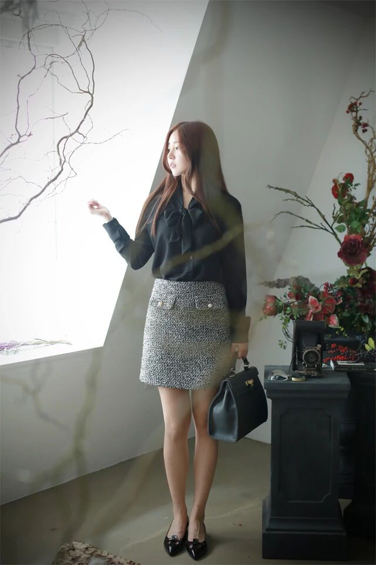
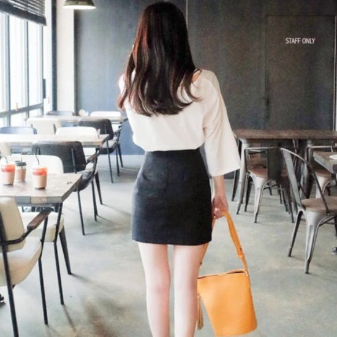

正文: 按照职责习惯，分类回答。
就不说什么身材啊颜值这些硬指标了，反正说了也改变不了什么，长腿翘臀细腰当然是最佳…
只推荐我觉得好看的包臀裙和搭配，不涉及身材和顏值^_^
【各种品牌各种款式太多，我从我比较喜欢的一个韩国品牌找的图，因为她家模特比较美，款式也比较齐】
来，洗眼睛开始。
一、包臀连衣裙，最省心，套上就是，不用前一晚就思考明天穿啥

二、包臀裙套装，一样省心
三、包臀裙配衬衫，需要考虑颜色和款式



四、包臀裙配T恤，比较可爱，不那么职业范

五、包臀裙配长袖，女人味十足
以上。
图片来自网络，我比较喜欢的品牌，不贵，但好看^_^
平常穿包臀裙的时候喜欢配略长的上衣，妹子们可以买一些百搭外套^_^
—————————————————
纯粹分享穿衣心得，点赞可以，不回私信=_=
——————————————————
不说品牌，免得有些人说我广告狗…
关闭评论。
觉得不好看的直接点叉就好，免开尊口，干嘛非得您喜欢啊^_^